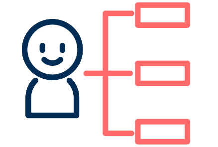

MONTHLY SAN


Project Features
모바일 웹사이트 신설기존에 PC로만 사용하던 사이트를 개편과 함께 모바일 버전 사이트를 신설하여 모바일 신규 트래픽을 유치
매거진 이미지를 활용한 디자인기존 뉴스 사이트와는 달리 양질의 사진 콘텐츠가 풍부한 특징을 적극 활용하여 비주얼적으로 시원한 레이아웃을 설계
게시판 서비스 신설월간산 독자들의 커뮤니티와 산악인과의 대화 서비스를 신설하여 활발한 유입을 유도

카테고리 재정리불필요한 카테고리를 없애고 새로 메뉴를 신설하여 기존 콘텐츠를 재정비하고 유저의 이해가 쉽도록 변경

조직코드 해시태그 추가현재 카테고리 체계 이외의 해시태그 기능을 추가하여 조직코드로 특집 기사를 한 곳에 제공하는 서비스 기획
월간 매거진 기능 추가매거진의 특성을 살려 시간의 흐름에 따라 컨텐츠를 릴리즈하여 독자가 순차적으로 확인할 수 있는 서비스를 제공